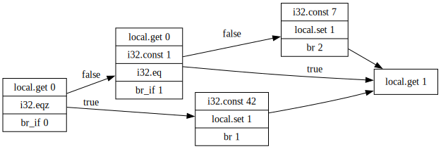

Overview
Formatter
Given a file horrible.wat:
(module (memory
10) (func
$f (param
$n i32) (result
i32) (if
( i32.lt_s
(
local.get $n)
(
i32.const
0))
( then
(
unreachable)))
(
if
(
i32.lt_s
(local.get $n)
(i32.const 2))
(then (return (local.get $n)))) (if
(i32.eqz
(i32.load (i32.mul (i32.const 4) (local.get $n)))) (then local.get $n i32.const 4 i32.mul
(call $f (i32.sub (local.get $n) (i32.const 1)))
(call $f (i32.sub (local.get $n)
(i32.const 2))) i32.add i32.store )) local.get $n i32.const 4 i32.mul i32.load return))
Owi will format it like this:
$ owi fmt horrible.wat
(module
(memory 10)
(func $f (param $n i32) (result i32)
local.get $n
i32.const 0
i32.lt_s
(if
(then
unreachable
)
)
local.get $n
i32.const 2
i32.lt_s
(if
(then
local.get $n
return
)
)
i32.const 4
local.get $n
i32.mul
i32.load align=1
i32.eqz
(if
(then
local.get $n
i32.const 4
i32.mul
local.get $n
i32.const 1
i32.sub
call $f
local.get $n
i32.const 2
i32.sub
call $f
i32.add
i32.store align=1
)
)
local.get $n
i32.const 4
i32.mul
i32.load align=1
return
)
)
Are you able to recognize the program now?
Interpreter
Given a file 42.wat with the following content:
(module $quickstart
(func $f
i32.const 20
i32.const 22
i32.add
drop
)
(start $f)
)
Running the interpreter is as simple as:
$ owi run ./42.wat
Nothing is happening, so you can add the -v option to print an execution trace:
$ owi run ./42.wat -v
owi: [INFO] parsing ...
owi: [INFO] checking ...
owi: [INFO] typechecking ...
owi: [INFO] linking ...
owi: [INFO] interpreting ...
owi: [INFO] stack : [ ]
owi: [INFO] running instr : call 0
owi: [INFO] calling func : func f
owi: [INFO] stack : [ ]
owi: [INFO] running instr : i32.const 20
owi: [INFO] stack : [ i32.const 20 ]
owi: [INFO] running instr : i32.const 22
owi: [INFO] stack : [ i32.const 22 ; i32.const 20 ]
owi: [INFO] running instr : i32.add
owi: [INFO] stack : [ i32.const 42 ]
owi: [INFO] running instr : drop
Script using the spectest module
Given the following print.wast file:
(module
(func $print_i32 (import "spectest" "print_i32") (param i32))
(func $main
i32.const 42
call $print_i32
)
(start $main)
)
You can print the value thanks to the print_i32 function imported from the spectest module:
$ owi script ./print.wast
42
Validator
Given a file type_error.wat with the following content:
(module $quickstart
(func $f
i32.const 20
i32.const 22
i32.add
i32.add
drop
)
(start $f)
)
Running the validator is as simple as:
$ owi validate ./type_error.wat
owi: [ERROR] type mismatch (expected [i32 i32] but stack is [i32])
[35]
You can also print a more detailed trace with the -v option:
$ owi validate ./type_error.wat -v
owi: [INFO] parsing ...
owi: [INFO] checking ...
owi: [INFO] typechecking ...
owi: [ERROR] type mismatch (expected [i32 i32] but stack is [i32])
[35]
Wasm2wat
Given a file 42.wasm, you can convert it to result.wat and then run it:
$ owi wasm2wat 42.wasm -o result.wat
$ cat result.wat
(module
(type (func))
(func
i32.const 20
i32.const 22
i32.add
drop
)
(start 0)
)
$ owi run result.wat -v
owi: [INFO] parsing ...
owi: [INFO] checking ...
owi: [INFO] typechecking ...
owi: [INFO] linking ...
owi: [INFO] interpreting ...
owi: [INFO] stack : [ ]
owi: [INFO] running instr : call 0
owi: [INFO] calling func : func anonymous
owi: [INFO] stack : [ ]
owi: [INFO] running instr : i32.const 20
owi: [INFO] stack : [ i32.const 20 ]
owi: [INFO] running instr : i32.const 22
owi: [INFO] stack : [ i32.const 22 ; i32.const 20 ]
owi: [INFO] running instr : i32.add
owi: [INFO] stack : [ i32.const 42 ]
owi: [INFO] running instr : drop
Wat2wasm
Given a file 42.wat, you can convert it to result.wasm and then run it:
$ owi wat2wasm 42.wat -o result.wasm
$ owi run result.wasm -v
owi: [INFO] typechecking ...
owi: [INFO] linking ...
owi: [INFO] interpreting ...
owi: [INFO] stack : [ ]
owi: [INFO] running instr : call 0
owi: [INFO] calling func : func anonymous
owi: [INFO] stack : [ ]
owi: [INFO] running instr : i32.const 20
owi: [INFO] stack : [ i32.const 20 ]
owi: [INFO] running instr : i32.const 22
owi: [INFO] stack : [ i32.const 22 ; i32.const 20 ]
owi: [INFO] running instr : i32.add
owi: [INFO] stack : [ i32.const 42 ]
owi: [INFO] running instr : drop
Call Graph
Given a file useless.wat with the following content:
(module
(func $start
i32.const 0
(if
(then call $a)
(else call $b)
)
)
(func $a
(block
call $b)
call $c)
(func $b)
(func $c)
(start $start))
You can then create a file useless.dot containing the call graph of the programm:
$ owi analyze cg useless.wat

Control-Flow Graph
Given a file useless.wat with the following content:
(module
(func $foo (param i32) (result i32)
(local i32)
(block
(block
(block
local.get 0
i32.eqz
br_if 0
local.get 0
i32.const 1
i32.eq
br_if 1
i32.const 7
local.set 1
br 2)
i32.const 42
local.set 1
br 1)
i32.const 99
local.set 1)
local.get 1)
)
You can then create a file useless.dot containing the control flow graph of the function foo:
$ owi analyze cfg useless.wat --entry-point=foo
